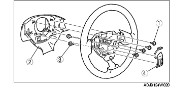

Audio control switch removal/installation
1. Disconnect the negative battery cable.
2. Remove the driver-side air bag module. (See DRIVER-SIDE AIR BAG MODULE REMOVAL/INSTALLATION.)
3. Remove the steering wheel. (See STEERING WHEEL AND COLUMN REMOVAL/INSTALLATION.)
4. Remove in the order indicated in the table.

|
1
|
Screw
|
|
2
|
Cover
(See Cover Installation Note)
|
|
3
|
Screw
|
|
4
|
Audio control switch
|
5. Install in the reverse order of removal.
Audio Control Switch Installation Note
1. Pass the audio control switch wiring harness under the horn bracket.

Cover Installation Note
1. Fix the audio control switch wiring harness in the cover clip.